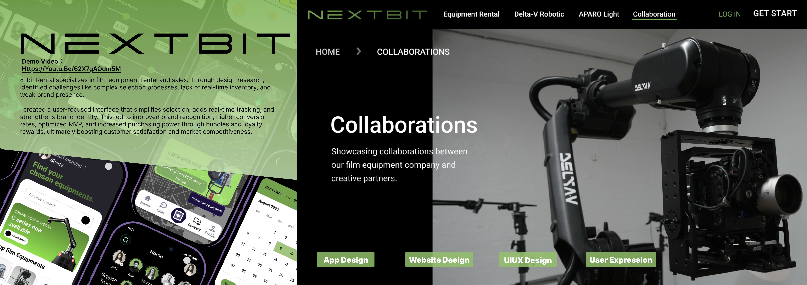

8-bit Rental / NEXT BIT
Overview
| Goal | Redesign a film-equipment rental experience with clear inventory, pricing, and booking — optimized for creators and production teams. |
| My Role | UX/UI design, information architecture, design system, prototype, content strategy. |
| Team | Designer (solo) collaborating with founders; feedback from renters and operators. |
| Deliverables | Responsive site prototype, component library, real-time inventory model, booking flow, brand refresh assets. |
Responsibilities
- Mapped renter journeys (browse → quote → book → pickup/return).
- Designed real-time inventory states (available, held, out, service).
- Created booking flow with add-ons (lenses, batteries, support gear).
- Built a simple pricing transparency** pattern (day rate, weekend, deposit).
- Defined a component system (cards, filters, badges, CTAs).
Process
- Research → interviewed renters; audited competing rental sites.
- IA & Content → equipment taxonomy (camera, lighting, MOCO, grip).
- Wireframes → mobile-first, then desktop with advanced filters.
- Prototype → quote request, cart, calendar availability, account.
- Validation → task walkthroughs with 5 users; iterated for clarity.